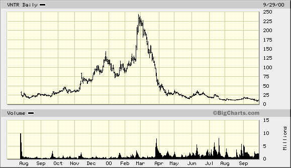

Issue #4: A Disciplined Process for Making Buy/Sell Decisions
Another problem common to many investors is the lack of a disciplined process for buying and selling securities. The importance of a “disciplined investment process” is often touted in the marketplace, yet few investors fully understand what this concept really means. Simply put, a disciplined process of investing ensures that decisions are not made on the basis of emotions. This is important because, as evidenced previously, when investors make emotional decisions, the consequences are less than optimal.
Click the icon to view a real-life example.
A True Story
In late 1999, Jack Ross, seeking to capitalize on the Internet stock gold rush, decided to purchase a little known company that seemed poised to become a leader in the hottest new market on the Internet – the Business-to-Business auction market. This company, Ventro Corporation, (VNTR) had developed a niche in the chemicals industry as the premier B2B exchange site and its stock had soared from its IPO price in the low teens to $62. Days after Jack’s purchase, VNTR soared to $85 and continued its torrid run, up over 15 points four days in a row until finally reaching a high of $240 in February 2000 - only months after Jack’s purchase. Then, in early March, VNTR started to pull back, retreating 5 points, then 10 points, and then another 10. All the while, Jack thought, “Hold on, it is just regrouping before making another big move.”
Jack was right. VNTR did make a big move – only the move continued to be in the wrong direction. Finally the stock reached $62, the price where Jack had originally bought it. At this point, he considered buying more, rationalizing that it was a “bargain” at this price. He continued to hold on until he finally sold it when the stock hit $40 – a 35% loss.

How did Jack let this happen? How did Jack let a gain of nearly 400% turn into a 35% loss? It’s simple. He bought on emotion, simply trying to ride the Internet wave. Then, he sold on emotion, capitulating at the end and finally taking his loss.
This story is real and it is repeated by investors every day. The only method for avoiding this trap is to have a clear and disciplined approach to buying and selling securities. Simply asking well-phrased awareness questions will enable you to identify clients/prospects that have had similar experiences and open up the opportunity for you to position your solution of a more disciplined approach.